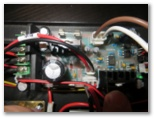
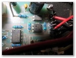
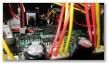
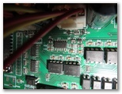
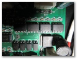
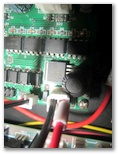

<h1>Inside CNC mill control box (11 images)</h1>
<span class="textsm"></span>
<p class="desc"><p><span class="textreg">Click a picture to see a larger view.</span><br>
<hr size="1">
<a href="target0.html"></a>
<a href="target1.html"></a>
<a href="target2.html"></a>
<a href="target3.html"></a>
<a href="target4.html"></a>
<a href="target5.html"></a>
<a href="target6.html"></a>
<a href="target7.html"></a>
<a href="target8.html"></a>
<a href="target9.html"></a>
<a href="target10.html"></a>
<map name="Map">
  <area shape="rect" coords="95,1,129,44" href="frameset.htm">
</map>
